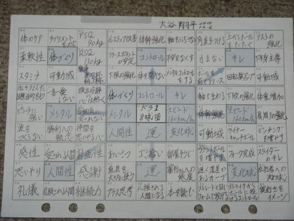

Context
As a gap year student, I have 6 months of complete freedom before starting university. While I could easily spend this time doing nothing, that would lead me nowhere. Instead, I see this as the perfect opportunity to pursue personal growth and embrace autodidactism — the art of self-directed learning. After all, we are all responsible for creating purpose in our own lives.
Over the coming months, I plan to embark on a journey of self-improvement. One method I’m particularly inspired by is the Harada Method, which focuses on achieving self-reliance and personal excellence.1 I first came across this method while reading about Shohei Ohtani’s journey to MLB, how he planned each aspect essential for reaching success as a baseball player. I hope to apply similar principles of dedication and self-discipline to my own life during this transformative period.
1 https://theharadamethod.com/

I’ve created my Harada Method Chart by breaking up my plans into smaller, more manageable chunks. For each group I’ve added a table of things I want to achieve and a brief description on why I want to achieve it. As I complete certain tasks I will be updating the Achieved? column with the end goal of filling each box with a tick.
So, check this post out regularly if you want to see my progress. I hope this inspires you to do something similar, setting up goals and achieve long term growth.
Maths
| Description | Achieved? |
|---|---|
| Real Analysis | |
| Linear Algebra | |
| Differential Equations | |
| Statistics and Probability | |
| Multivariable Calculus | |
| Practice STEP II & III |
I plan to get a head start on the topics I’ll encounter in my first year of a Mathematics/Statistics degree.2 Thankfully, there are countless resources available - textbooks, online courses, problem sets — that make self-directed learning not only possible but also highly effective. By dedicating time to these subjects, I want to build a strong understanding of the material and develop problem-solving skills that will serve me well in university.
2 https://www.quantstart.com/articles/How-to-Learn-Advanced-Mathematics-Without-Heading-to-University-Part-1/
Coding & Data Science
| Description | Achieved? |
|---|---|
| Learn R & Shiny | |
| Participate in TidyTuesday | |
| Improve my Python (Pandas, NumPy, SciPy, Seaborn) | |
| R & Python Project | |
| Get work experience / internship |
In addition to academic preparation, I want to use this gap year to develop my technical skills and gain practical experience, particularly in programming and data analysis.
Learning R and packages (such as Quarto, which I built this website with) will allow me to create interactive data visualizations and applications. I will try to regularly participate in TidyTuesday, a weekly data visualisation challenge, will help me apply these skills in real-world scenarios while building a portfolio of work.3
3 https://github.com/rfordatascience/tidytuesday
For my final goal, I aim to complete a substantial R & Python project that combines data analysis, visualisation and problem-solving to combine everything I learn across the months.
Languages
| Description | Achieved? |
|---|---|
| Improve my French (B2 -> C1) | |
| Learn Italian (B1) | |
| Learn Romanian (A2/B1) |
One of my personal goals during this gap year is to improve and expand my language abilities. I believe learning a language is simultaneously one of the most challenging and rewarding endeavors one can undertake as it opens the doors to new cultures, perspectives and connections.
I aim to advance my French from an intermediate (B2) to an advanced (C1) level by involve refining my grammar, expanding my vocabulary, and practicing speaking and writing fluently.
In addition I would like to learn other Romance languages, as they share a rich history and linguistic roots, making it easier to draw connections between them. I hope to achieve a B1 level in Italian and an A2/B1 level in Romanian. For both I’ll start with basic grammar and vocabulary, gradually working my way up to simple conversations and reading.
Fitness & Health
| Description | Achieved? |
|---|---|
| Run a 10K and do it regularly | |
| 5K sub 30 -> 5K sub 25 | |
| Big Three 300 |
Staying physically active and challenging myself in fitness is something my parents want me to do given my out of shape body. My fitness goals will build a stronger, healthier version of myself with a healthy dopamine boost.
I aim to run a 10K and make it a regular part of my routine. Running has always been a great way for me to clear my mind and completing a 10K will be a significant milestone in my fitness journey. Likewise, I want to improve my 5k time to sub 30 minutes and once I am more comfortable, cutting to sub 25 minutes
I’ve set a strength goal of increasing my Big Three (bench, squat, deadlift) total to 300kg - last time I measured was a 220kg (45/85/90). A 1x bodyweight bench, 1.5x bodyweight squat and 2x bodyweight deadlift should give me somewhere around 300kg.
Other
| Description | Achieved? |
|---|---|
| Find a part-time job | |
| Get my driving licence | |
| Learn Baduk (SDK) | |
| Read regularly (1 book per week) |
The first two are pretty self-explanatory (YOU cannot be unemployed and without a driving licence in 2025 😭🙏).
I also want to learn Baduk (Go) and reach the Single Digit Kyu (SDK) level. Baduk is a strategic board game that has fascinated me for years - chess hasn’t really interested me ever. Reaching an intermediate standard will be intellectually stimulating and will also help me develop patience and strategic thinking.
Finally, I’ve set a goal to read regularly, aiming for one book per week. I want to explore a variety of genres — particularly philosophy, SF and memoirs.
These will be my go-to things that will help refresh my brain when the maths or programming overwhelms me.
Final Comments
My 2025 didn’t start the way I wanted despite having tried my best. For a while I was dejected and unmotivated but I’ve realised letting your emotions get the better of you won’t help in any way. It’s time to get past that stage and act. Looking in the long term I believe what I do in these 6 months can define who I am. As I stay focused and committed to my goals, even if I don’t accomplish everything I’ll know that I have grown personally.
I will post an update after the 6 months. Thank you for reading.😄
{kind=link}